6.810 Engineering Interactive Technologies (fall 2018)
Pset Grading
Work on your Midterm Presentation
Photo Taking and Editing
This is work in progress and I am still updating.
Step 1: Pset Grading
- 1.10 - 1.20pm Calibrate your touchpad for the IDC light environment to be ready for the live demo. You will have 10 minutes to do it before we start to come around and do the grading.
- If you are done earlier, please raise your hand and we will come by to grade your demo before time is up and you can move on to the rest of today's skills lab.
- In the live demo, we will first ask you to show us your three gestures + functions yourself, afterwards a member of the teaching team will try the demo themselves.
Step 2: Work on your Midterm Presentation While Waiting
- If you are waiting to be get your touchpad graded and don't want to unplug it for Step 3, we recommend you get started on the midterm presentation in the meanwhile.
- A template for your midterm presentation is in your team's google drive folder.
Step 3: Photo Taking
You have this really cool touch pad -- now let's make sure you have a professional grade picture of it so you can add it to your website / project portfolio.
Please don't underestimate how important professional presentation is. Recruiters have only a few minutes or less to do a skim over the first round of applications, and having a high quality presentation of your work is super valuable at this point.
Start by Taking a Picture with a Clean Background and no Crap in the Image
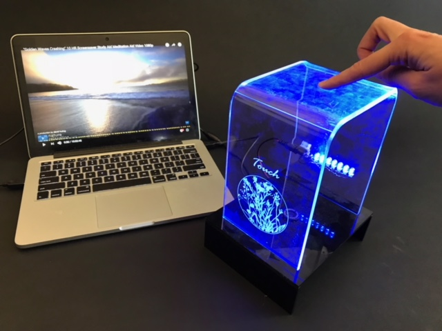
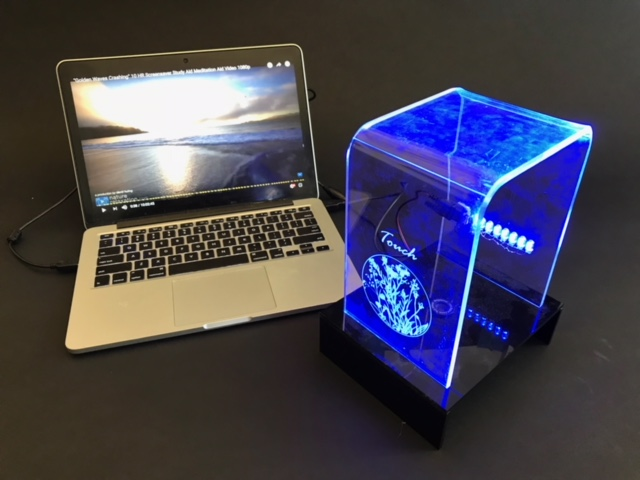
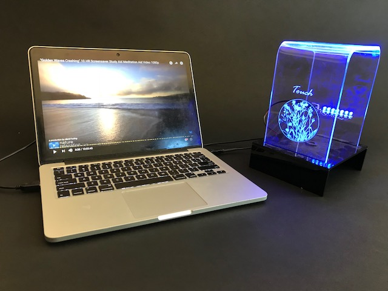
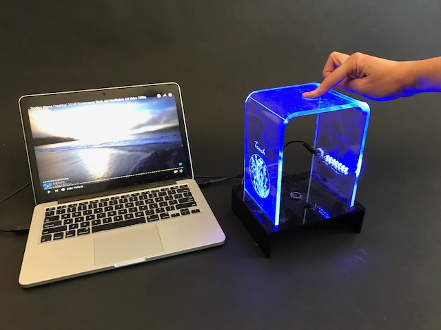
These are some images I snapped with my iPhone this morning in my office.
It is worth taking a moment and thinking about which one you like most and why.
For instance, some images have a hand and some don't.
Some have the laptop further back and the touchpad in the front, some have it reversed.
Here is how the setup looks like.
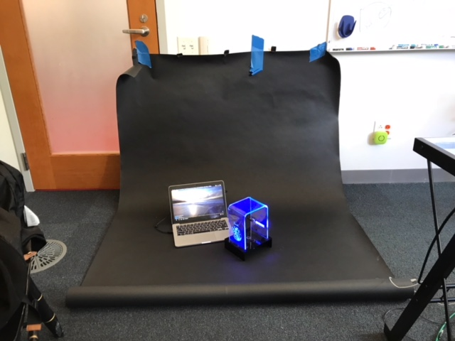
Expert tip: Don't tape the thing on your office door like I did ;).
These background paper rolls are called backdrops.
You can buy them in many different stores, e.g. on amazon here.
We have these colors for you:
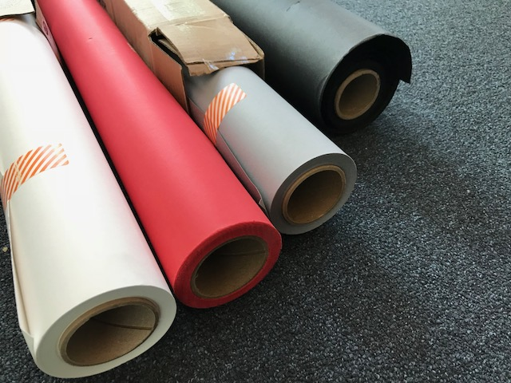
We only have 4 rolls, but since it literally is just cardboard, you can cut yourself a piece of.
It's better to cut the piece a little longer than to short.
The picture above showing my office should be a good indicator of length.
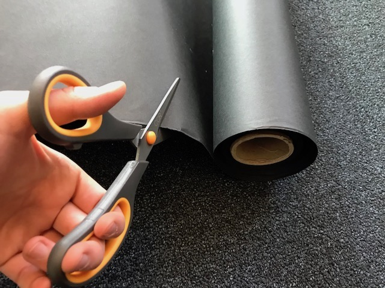
Please share the backdrops with each other. It might also be worth to ask your team partner or another student to lend you a hand when taking a picture that has a hand in it.
Upload 5 high-quality pictures of your touchpad to gradebook.
Pictures should show a variety of different styles:
- Use at least two different backgrounds (e.g. black, white, red, gray).
- One image could show the OpenCV calibration, another one could show your application on the laptop screen.
- Try some different arrangements, e.g. with hand, without hand, laptop in the back vs. in the front.
For your final presentations I expect a professional presentation with high quality pictures as you would use for a future client or investor. The pictures above are an example of what I mean. As you saw, it doesn't take a lot of effort if you use a backdrop and you can even use your phone for taking the pictures.
Step 4: Photo Editing
Sometimes the photo doesn't come out super nice for various reasons, then photo-editing, with Photoshop or Gimp comes in very handy.
Removing stuff from an image that should not be there
Somes we just forget to pay close attention when taking a picture and there is stuff that should not have been there. Two examples below.
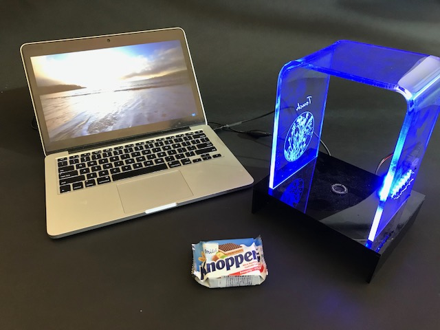

In the left image I forgot to remove my breakfast Knoppers (german chocolate waffle) from the backdrop... In the second image on the left side the backdrop wasn't long enough.
How can we fix this without retaking the picture?
We show you a walkthrough for both Photoshop and Gimp below.
I will show you how to do it at the example of my picture. Please take your own picture now, put a small object in the image right next to your own touchpad that you want to remove later, such as a pen, coffee cup, a piece of tape. Avoid any overlaps with existing objects since this will be harder to remove.
In Photoshop
Open your own image, mine looks like this:

Select the 'Clone Stamp Tool' from the Tool menu.

Press Alt and click somewhere on the black background.
This will 'copy' that area using the center of your click as the reference point.
Now click on the objecty ou want to remove, this should start making it black.
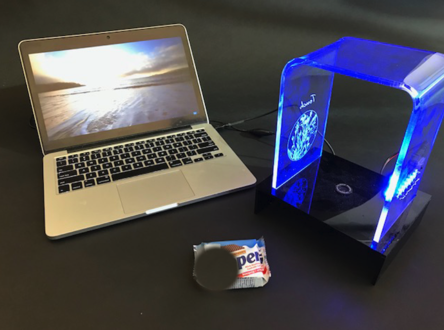
It is best practice to not drag and 'paint out' the area.
It is better to repeatedly Alt+click somewhere to copy that area, and then click again on the object you want to remove to stamp there, so you sample from multiple areas.

Ok, so that's not bad but it's clearly visible that something in the image was modified.
To blur this a bit more, use the 'patch' tool from the toolbar.

Using the patch tool, draw a selection around your stamped area.
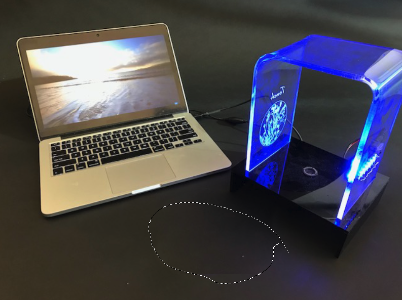
Now drag that area over another black area, both will be mixed together.
Make sure _not_ to hit the laptop or a part of the touchpad, so this here is bad:
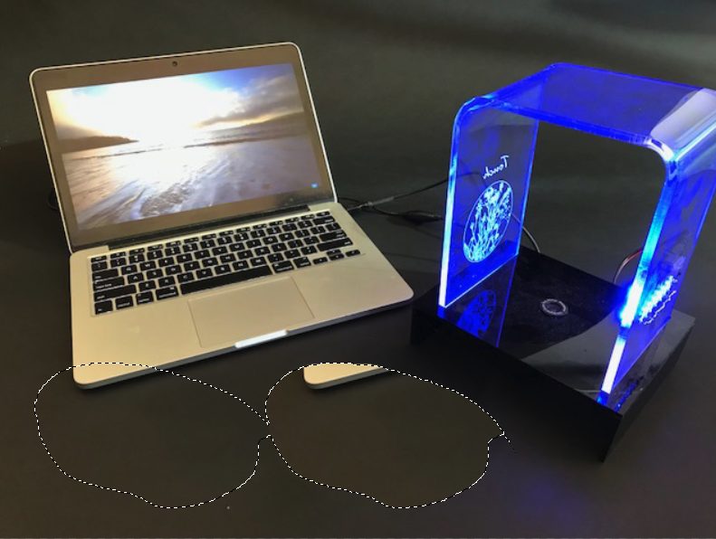
Repeat this a couple of times for better sampling results.

Done!
Before and After:
Upload a before and after image to gradebook.
Upload your original image that had the unwanted object in the picture and your new photoshopped image that has the object removed.
In Gimp (free for download)
You can download Gimp from here.
Open your own image, mine looks like this:

Select the 'Clone Tool' from the Tool menu.
I describe how to use it below, but you can also watch this short 1 min video.

Press command (on mac) or control (on windows) and click somewhere on the black background.
This will 'copy' that area using the center of your click as the reference point.
Now click on the objecty ou want to remove, this should start making it black.
 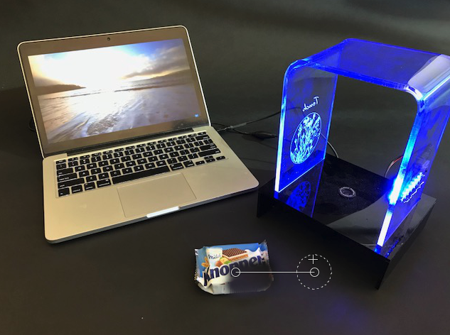
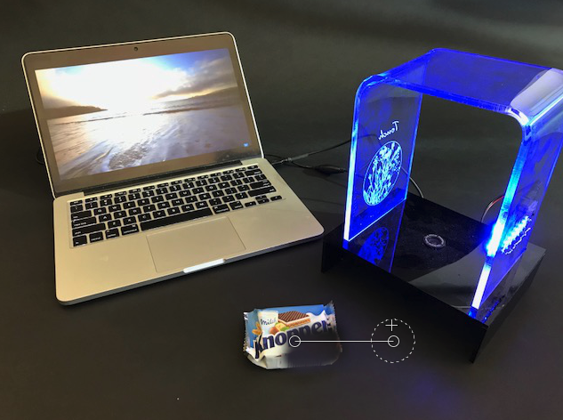
It is best practice to not drag and 'paint out' the area.
It is better to repeatedly Alt+click somewhere to copy that area, and then click again on the object you want to remove to stamp there, so you sample from multiple areas.
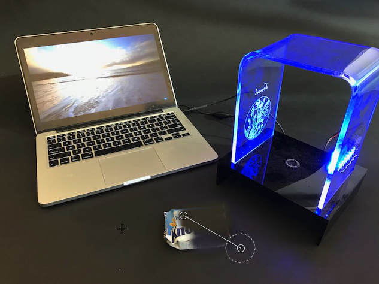


Ok, so that's not bad but it's clearly visible that something in the image was modified.
To blur this a bit more, use the 'Healing Tool' from the toolbar.
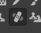
The healing tool works in the same way as the clone tool.
Press command (on mac) or control (on windows) and click somewhere on the black background (_not_ your stamped area where you removed the object).
This will 'copy' that area using the center of your click as the reference point.
Now click on your stamped area and paint a bit around, this should smooth things out.

Repeat this a couple of times for better sampling results.
Done!
Before and After:

Upload a before and after image to gradebook.
Upload your original image that had the unwanted object in the picture and your new photoshopped image that has the object removed.
Work on your Midterm Presentation
Photo Taking and Editing